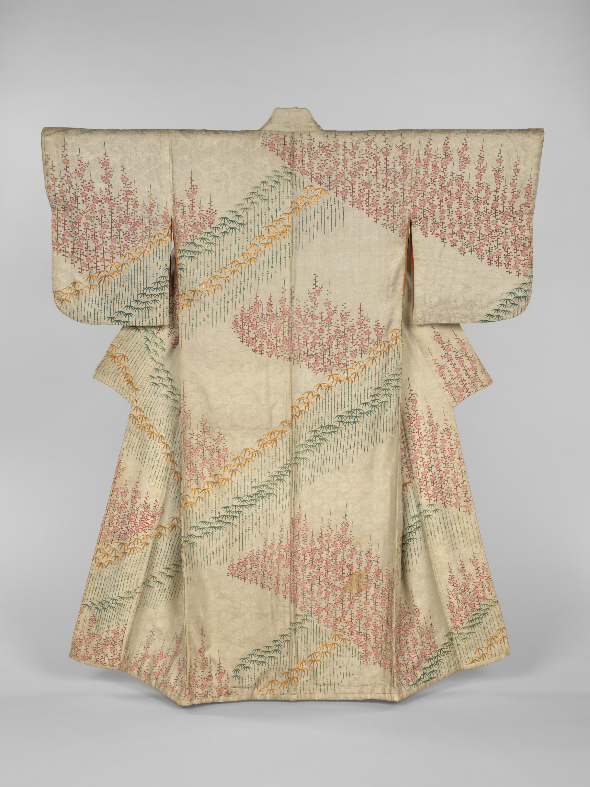
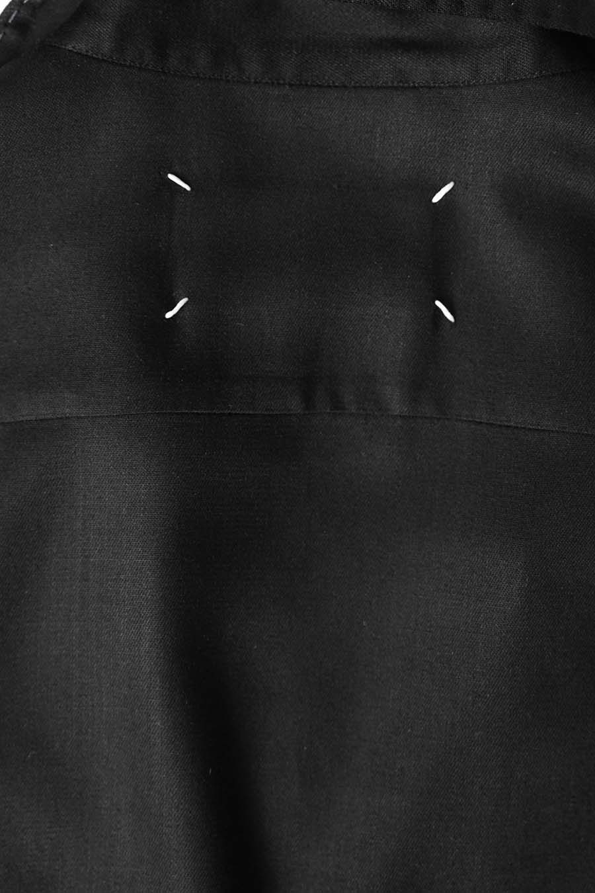

AN INDEPENDENT FASHION INDEX / VOL. 01
Beyond
the Label.
每個品牌，都有一個故事。
從主理人的第一個想法，到你衣櫃裡的那一件。
搜尋品牌，讀懂它的來歷、動態與購買去處。
RECENT SEARCHES / 最近查詢
查詢紀錄與品牌筆記儲存在目前瀏覽器。
STUDY NO. 001 / FORM & IDENTITY
BEYOND THE LABEL ↗
LABEL ATLAS / THE READING ROOMREAD A LABEL. FIND A WORLD.
LABEL ATLASAN ODYSSEY IN FASHION
BEYOND THE KNOWN
把好奇心，
留給未知。
每一本書，都是一個尚未抵達的世界。
向下捲動，繼續航行
THE READING ROOM
在故事的引力中，自由漂流。
123 LABELS / 5 WORLDSTHE ORBITAL LIBRARY / SECTOR HOPPING
日本星區
品牌研究書，在軌道中緩慢漂浮。
拖曳環繞書群
IN TRANSIT
找指定品牌
THE LIBRARY
Choose your aisle.
Choose your aisle.
依編輯分類探索；同一品牌可以出現在不同書區。
拿起書本 · 點開探索
按下書封，即時搜尋這個品牌的故事。
分類為編輯選讀，並非完整或唯一的品牌定位。書封由本站設計；LOGO 僅作品牌辨識，版本依來源。未取得可靠圖檔的品牌採本站編排字標。
坐上時光車，穿越時尚。
選一個年代，拉下啟動桿。窗外是那個時代最具代表性的衣服輪廓，下方航行日誌是你需要知道的歷史。
時空速度
0 %
內容依各站列出的博物館、學術與媒體資料重新撰寫摘要。窗外圖片依圖說標示來源，權利屬原館／原站；沒有圖片的站以代表輪廓示意圖呈現。
01 / A BRIEF HISTORY OF GETTING DRESSED
衣服如何走到今天。
從一枚鉚釘，到一次輪廓革命。
沿著時間，閱讀穿在身上的歷史。
這組條件沒有符合的歷史節點。
The Reading List
01 — THE INDEX01 / DISCOVER一個名字，開始探索
自動搜尋公開網頁與百科，無須逐一蒐集文章。
02 / UNDERSTAND資料有出處，閱讀有脈絡
品牌、人物與市場報導分區整理，保留原文來源。
03 / FIND找到喜歡的，也找到去處
查找販售線索，收藏項目，匯出你的研究筆記。
THE PERSON BEHIND THE INDEX
讓服裝脈絡，成為可以親手翻閱的索引。
LABEL ATLAS 由 GitHub 帳號 10969Ethan 維護。這個專案把品牌研究、設計師資料與服裝史典藏整理成可探索的閱讀入口，並保留資料來源，讓每個觀點都能回到原始脈絡查閱。
GitHub Pages 靜態版的收藏、查詢紀錄與筆記保存在目前瀏覽器；品牌書庫、時光機、設計師宇宙書庫與服裝史則可直接從下方作品圖進入。
查看專案與更新紀錄 ↗
02 / THE FASHION TIME MACHINE
04 / LOOK CLOSER